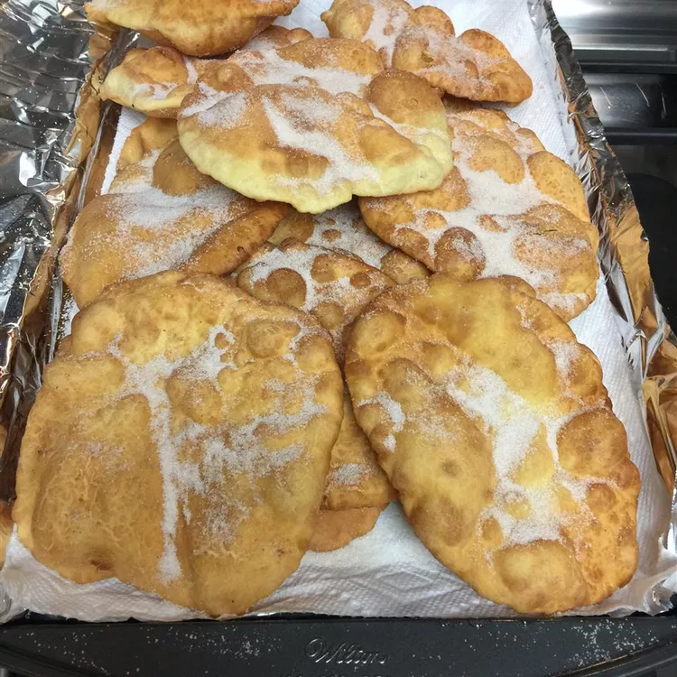

Bunuelos recipe

Description
Buñuelos are dough fritters covered in cinnamon-sugar. The dough balls are usually flattened into discs before frying. The dessert, which has Mexican and Spanish origins, is frequently served during the Christmas season and on New Year's with piloncillo syrup.
These disc-shaped fried doughnuts are a Hanukkah tradition for Sephardic Jews—Jews originally from Spain who now live in many Latin countries, the Middle East, and North Africa. A drizzle of honey instead of powdered sugar is a special finishing touch for Hanukkah.
Buñuelos Ingredients
- 4 large eggs
- ¼ cup white sugar
- 1 teaspoon vegetable oil
- 1 ½ cups all-purpose flour, plus more for kneading
- 1 teaspoon baking powder
- 1 teaspoon salt
- 1 cup white sugar
- 1 teaspoon ground cinnamon
- 1 cup vegetable oil for frying
How to Make Buñuelos
- Beat the wet ingredients together, then add the dry ingredients.
- Turn the dough out and knead until smooth. Roll the dough into balls.
- Shape each ball into a 5-inch circle. Let stand for 10 minutes.
- Fry until golden brown, then sprinkle with cinnamon-sugar.
Go back